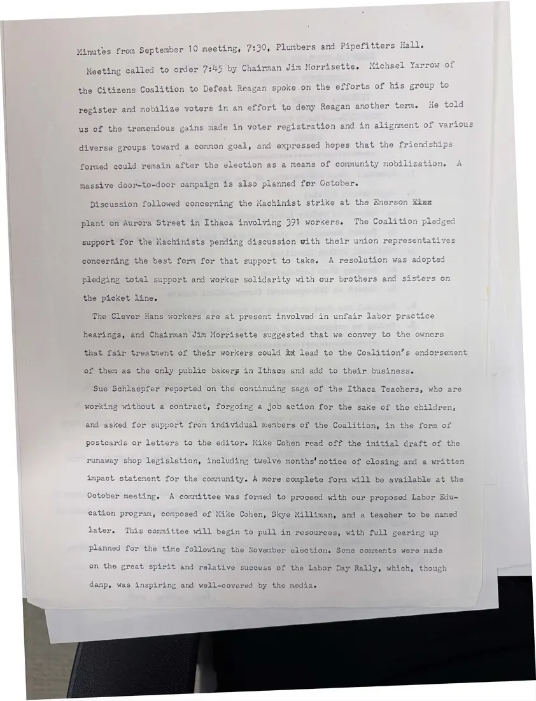

Minutes, 1 page
Minutes of the September 10 meeting
September 10, [1984]Date inferred
The coalition hears about efforts to register voters, pledges support to Machinists on strike at the Emerson plant, and reports on the Clever Hans workers' unfair labor practice case, the Ithaca teachers' contract, and the Labor Day rally.
Download or cite this itemPages


(open zoom view)Read the page text (machine-read, mostly readable)
This text was generated automatically from the photograph and has not been corrected. The image is the authoritative record.
‘ 2 mm . a Pin 5 «a H Minutes from September 10 meeting, 7:30, Plumbers and Pipefitters Hall. ar : peg) 5 7m 5 hap! Payer ovul f Meeting calied to order (34) by Chairman Jim Morrisette. Micnaet Yarrow o mets the Citizens Coalition to Defeat Reagan spoke.on the efforts of his group to register and mobilize voters in an effort to deny Reagan another term. He told us of the tremendous gains made in voter registration and in alignment of various diverse groups toward a common goal, and expressed hopes that the friendshi formed could remain after the election as a means of community mobi massive door-to-door campaign is also planned for October. Discussion followed concerning the Machinist strike at t plant on Aurora Street in Ithaca support for the Machinists pendin: that support to take. A resolution w epport and worker solidarity with our brothers and sisters on The Clever Hans workers are at present involved i hearings, and Chairman Jim Morrisette suggested that we that fair treatment of their workers could xt lead to the of them as the only public bakerg in Ithaca and add to their bi Sue Schlaepfer reported on the continuing saga of the Ithaca Teachers, who are working without a contract, forgoing a job action for the sake of the children and asked for support from individual members of the Coalition, in the fors postcards or letters to the editor. Mike Cohen read off the initial craft of the runaway shop legislation g twelve months’ notice of closing and a written impact statement for the community. A more complete form will be available at the October meeting. A committee was formed to proceed with our proposed Labor Edu- cation progran, composed of Mike Cohen, Skye Milliman, and a teacher to be named later. This committee will begin to pull in resources, with full gearing up Anno aa 5 : planned for the time following the November election. Some comments were made on the great spirit and relative success of the Labor Day Rally, which, though damp, was inspiring and well-covered by the media.
See something wrong, or recognize a person or event? Send a correction. If you hold rights in this item or think it should not be public, write to the same address.